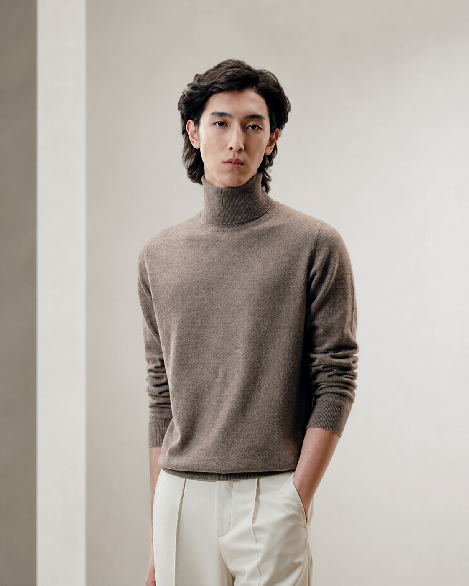

Turtleneck Capsule
Cashmere Turtleneck
A luxury edit in three perspectives: the standing silhouette for form, the close portrait for texture, and the seated lifestyle frame for movement. Crafted from fine Mongolian cashmere with a soft hand and clean drape for timeless winter dressing.